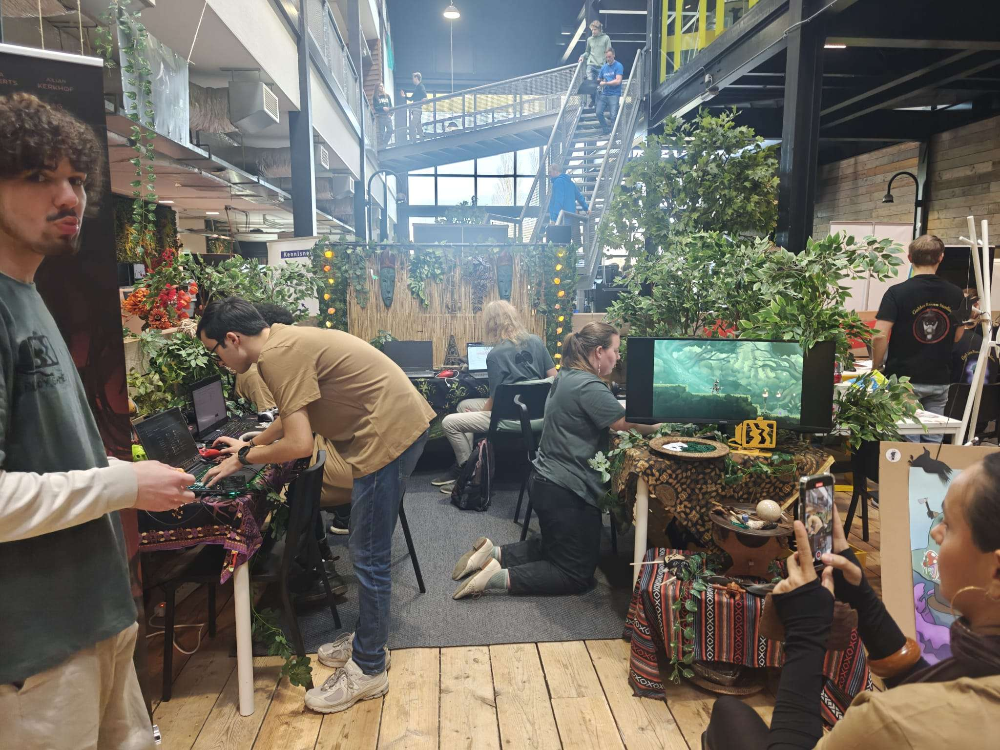
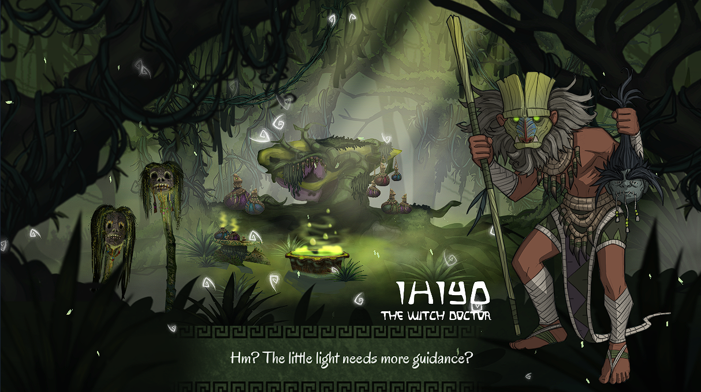
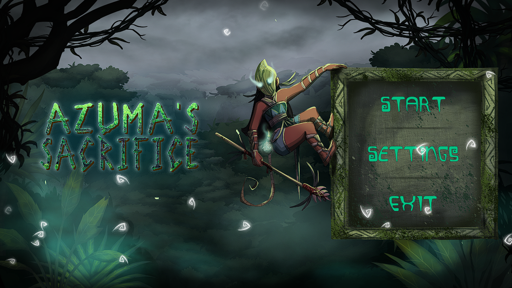
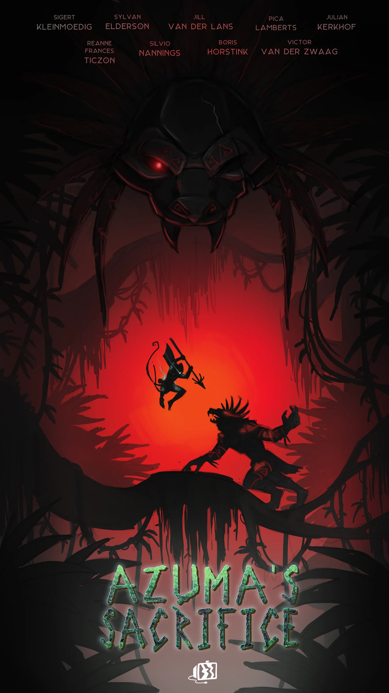
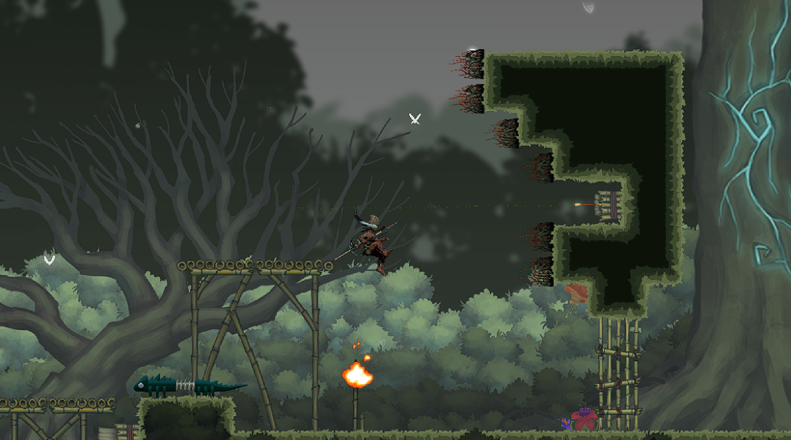

Azuma's Sacrifice
I'm most proud of the work I've done on Azuma's Sacrifice, an action-platformer game we made with a group of 9 where I was the director.
As the leader, my main priorities were ensuring that we did plenty of playtesting, as well as keeping our vision for the game in one line. I ran weekly playtests with other students of the course, as well as leading meetings for game and narrative design - trying to keep decision-making fast, while not compromising on reaching consensus.
Aside from leading the team, I also did QA (much to the chagrin of my fellow programmers) as well as implementing many of the core systems.

Our booth at the expo (where we won!)

Some of the dialogue I wrote!

Our title screen

A promotional poster

A look in-game